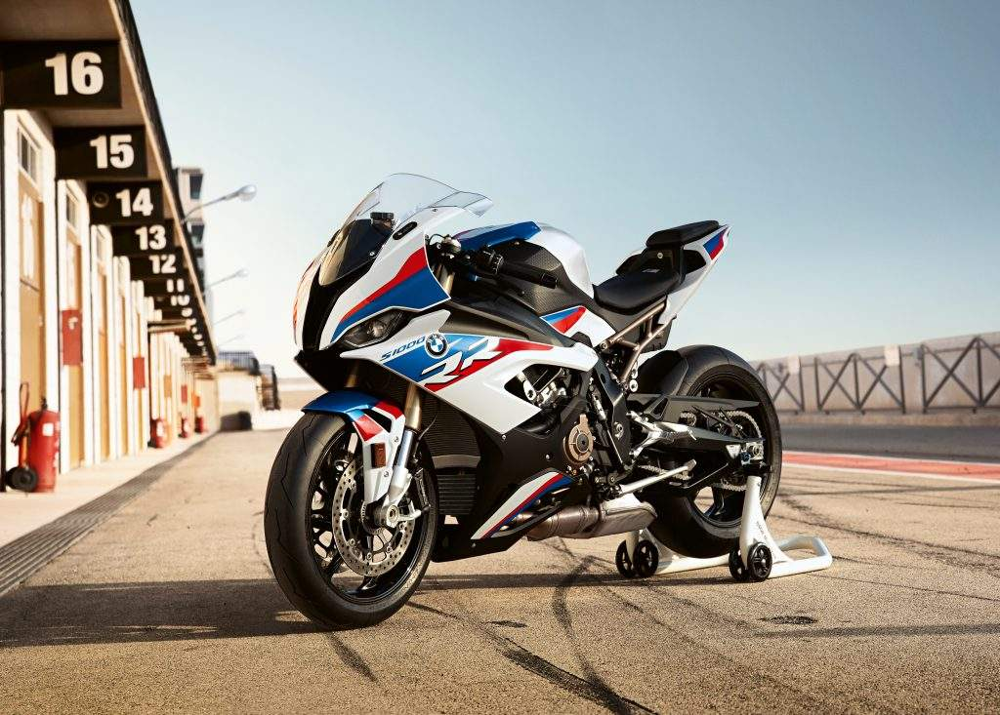

this is BMW
first bike
BMW made 1,000 S1000RRs in 2009 to satisfy World Superbike homologation requirements, but expanded production for commercial sale of the bike in 2010. It has a standard anti-lock braking system, with an optional electronic traction control. As of 2016, it has a wet weight of 204 kg (450 lb), and produces 148.4 kW (199.0 hp; 201.8 PS) at 13,500 rpm.[4] With 133.6 kW (179.2 hp; 181.6 PS) to the rear wheel, it was the most powerful motorcycle in the class on the dyno.[5] BMW S1000RR is currently the second fastest road legal bike, surpassing the Kawasaki Ninja H2 in most scenarios. It goes up to 310kmph in the latest generation and accelerates to 300kmph in just 20 seconds.
this is Kawasaki
second bike

ts Ninja H2R track-only variant is the fastest and most powerful production motorcycle on the market, producing a maximum of 310 horsepower (230 kW) and 326 horsepower (243 kW) with ram-air.[1] The H2R has 50% more power than the fastest street-legal motorcycles, while the street-legal Ninja H2 has a lower power output of 200 hp (150 kW)[21]-210 hp (160 kW) with ram-air.[1]
this is honda
third
\.jpg)
Honda's previous 600-class sport bike, the CBR600F4i, was considered a balance of practicality and performance, as capable as other Supersport-racing 600s, but a more docile and comfortable street bike relative to the competing Kawasaki Ninja ZX-6R, Suzuki GSX-R600, and Yamaha YZF-R6.[1][2] When introduced in 1999, the CBR600F "fought off racier contenders on the track while still managing to be a more practical streetbike", as described by Motorcyclist, "one golf club that acts like a whole bag."[3] With the successor 2003 CBR600RR, Honda shifted to a more aggressive, less compromising strategy in the "churning dogfight that was the middleweight class at the time",[1][4] Honda's CBR-RR Project Leader Hiroyuki Ito said, "We developed the RR in a completely different way from any model in the past. In the past Honda has always developed a roadbike, then modified it for racing. But with the RR, we first built a prototype racer, then gave it to the production department."[5][6] Rotating an aging model down to the next tier of a product line as it is overshadowed by a model with the latest technology is common practice among sport bike manufacturers including Buell, Ducati, Honda, Kawasaki, Suzuki, Triumph, and Yamaha.[7]
this is Yamaha
forth
.jpg)
Yamaha launched the YZF-R1 in 1998 after redesigning the Genesis engine to create a more compact engine by raising the gearbox input shaft and allowing the gearbox output shaft to be placed beneath it. This "stacked gearbox" was followed by other manufacturers. Compacting the engine made it much shorter, allowing the wheelbase to be shortened as well and the center of gravity to be optimized. The swingarm could be made longer without compromising the overall wheelbase, which was a short 1,385 mm (54.5 in). Four 40 mm Keihin CV carburetors fed fuel to the engine.
this is Suzuki
fifth
.jpg)
Suzuki Motorcycle India, Private Limited (SMI) is the wholly owned Indian subsidiary of Suzuki, Japan.[2] It was the third Suzuki automotive venture in India, after TVS Suzuki (1982–2001) and Maruti Suzuki (1982). In 1982, the joint-venture between Suzuki Motor Corporation and TVS Motor Company incorporated and started production of two wheelers in India. In 2001, after separating ways with TVS motor company, the company was re-entered as Suzuki Motorcycle India, Private Limited (SMI), in 2006. The company has set up a manufacturing facility at Gurgaon, Haryana with an annual capacity of 540,000 units.